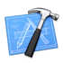

More information:
Projects/design
- Most of my working life has been projects based. From coming up with the initial solution to a problem and seeing it through to the final system regardless of whether it is a mechanical, software, web or other solution.
- Initial and ongoing client meetings.
- Managing timescales.
- Managing budgets.
- System installations and commissioning.
- Ongoing support.
Electronics
- Circuit design mostly digital but some analogue.
- PCB design, I have my own copy of EasyPC but have used others in the past.
- Fault finding.
- Prototype build.
- Prepare for manufacture.
- Ongoing support.
Software development
- Embedded software/Firmware design and documentation, mostly C on the Microchip PIC 8 and 16 bit packages and AVR but have ‘dabbled’ with others. Mostly in C but can drop into assembler as required.
- PC Desktop development, VB6, vb.net and c#.
- Debugging.
- Optimisation.
- Mac desktop development, RealBasic (now Xojo) and some xcode development.
- Mobile device development. iOS and Android, mostly phonegap but some native code development (this is one of the things I am concentrating on at present).
- At home with Windows, Mac with a working knowledge of Linux.
Mechanical
- Mechanical design and 2D CAD knowledge (AutoCAD, draftsight)
- Pneumatic knowledge, again have used as part of systems design.
Web
- Design & Development
- PHP
- CSS/SASS
- HTML
- Databases (MySQL)
- JQuery/Javascript/AJAX
- Wordpress setup and bespoke theme design.
- Third party and own APIs
Other
- System installation and onsite commissioning.
- Customer/Technical support.
- Technical documentation, word, photoshop, CAD etc as required.
- Electrical design, not a favourite but have used as part of overall system design.
- Knowledge of networks.
- The usual everyday applications, Microsoft office, Adobe creative suite.
Current projects include:
- Pre-delivery commissioning and configuration of kiosk counting systems destined for Canada.
- The getWaiter! app and website.
- A low cost, high functionality replacement for an off the shelf PLC unit.
Past projects:
- I am adding these to my blog pages all the time. See here for the blog.
A mini-CV
Owner/DirectorRAKtronics Limited
2013 – Present
New product development
Ipsos Retail Performance (was Synovate Retail Performance)
2011-2013
Retail footfall and customer insights.
System development
Synovate Retail Performance (was SPSL)
2008-2011
Retail footfall and customer insights.
Electronics/Software/System engineer
SPSL
2005-2008
Retail footfall and customer insights.
Image processing software Engineer
Dimaco
2004-2005
Food package inspection systems.
Owner/Director/Engineer
Vision Controls Limited
1992-2004
Industrial vision inspection and control systems.
Software/Electronics engineer
Design Technologies Limited
1989-1992
Multi-axis machine tool design and manufacture.
Quality Assurance/repair technician
MFI Computer Engineering
1985-1989
Repair and testing of network and retail systems.
Electronics and Telecommunications Apprenticeship
The Royal Aircraft Establishment
1980-1985
Four year electronics and telecommunications apprenticeship.
